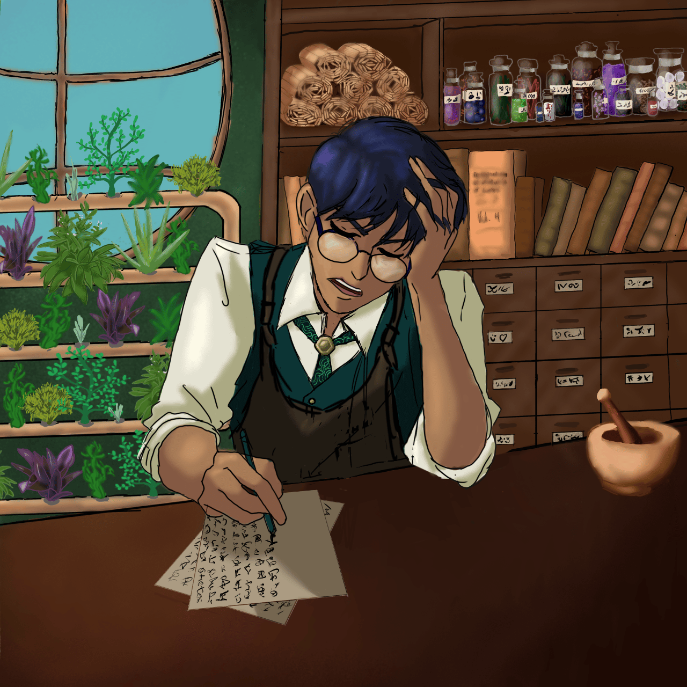

Charcters
Our 4 investigators are
Zora, the sharpshooter act in the show and second in command of the circus. She is very rule oriented and seeks in vain to try and keep her friends from causing trouble.
Corin, the ships mechanic, is an innovative inventor who avoids the spotlight of the show except for when he fires his best friend of a cannon. He has a logical and scientific explanation for every situation no matter how bizarre.
Orilo is a giant, an ex-gladiator and current priest of an obscure mushroom god. His main act is to be fired out a cannon by his friend Corin, though he occasionally helps out as a strong man.
Caelene, The light-fingered magician who delights in pranks and chaos and who has a range of secrets of her own.
Other Characters
The Ringmaster of the circus is Alister Crowe, a bubbly, vivacious man who always wears a mask and a feather cape. He is the head of the circus and has some mysterious connection to the ship itself, Le Petit Corbeau.

Dr Vamist, the ships medic, has a tenuous grip on reality and yet the most common sense of anyone on board.
Sergei is the animal trainer and the reason Caelene joined the circus, a gentle giant who always has a treat for his animal friends
the leads of the acrobat team are Paniki and Gulat, very rarely seen apart these two are the backbone of the teams combat power. and are very in sync
The airship itself is both home and stage to the members of the circus, with 4 floors and enough space on the top to hold the big top tent and a double row of vendor stalls. Ringmaster Crowe can occasionally be seen talking to the ship and late at night it almost seems to be breathing.